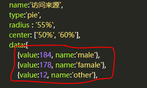
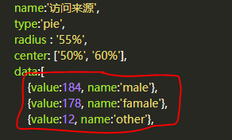
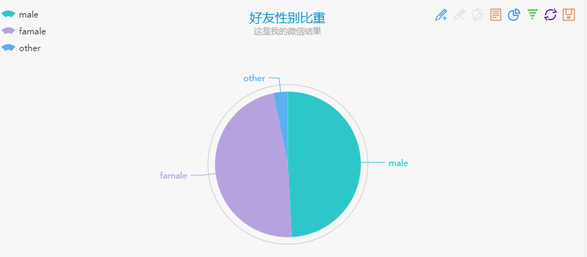

还未完成暂不开放，谢谢
我们可以通过wxpy来分析自己好友的组成并且生成图表。
首先还是登录from wxpy import * bot=Bot() my_friend=bot.friends()接下来我们需要创建一个字典来实现存入性别的数值。sexdict = {'male': 0, 'female': 0, 'other': 0} for friend in my_friend: if friend.sex == 1: # 1代表男性 sexdict['male'] += 1 elif friend.sex == 2: # 2代表女性 sexdict['female'] += 1 else: sexdict['other']+=1接下来我们只要打印这个字典就可以得到相应的内容print(sexdict)比如{'male':184,'female':178,'other':12}
接下来就是生成图表了，如果你会使用Matplotlib的话可以自己画图。这里我们就用ECharts来代替我们实现吧。
打开上面的网址，左边是已经替我们写好的代码，右边就是显示的结果了。
我们将我们的数据填写进去，需要修改的地方具体如下
 

然后点击刷新按钮，就可以看到结果了。
 代码在这里
还未完成暂不开放，谢谢

还未完成暂不开放，谢谢

还未完成暂不开放，谢谢
如果大家有什么建议或者建议请及时联系我我才能为大家做出更好的教程